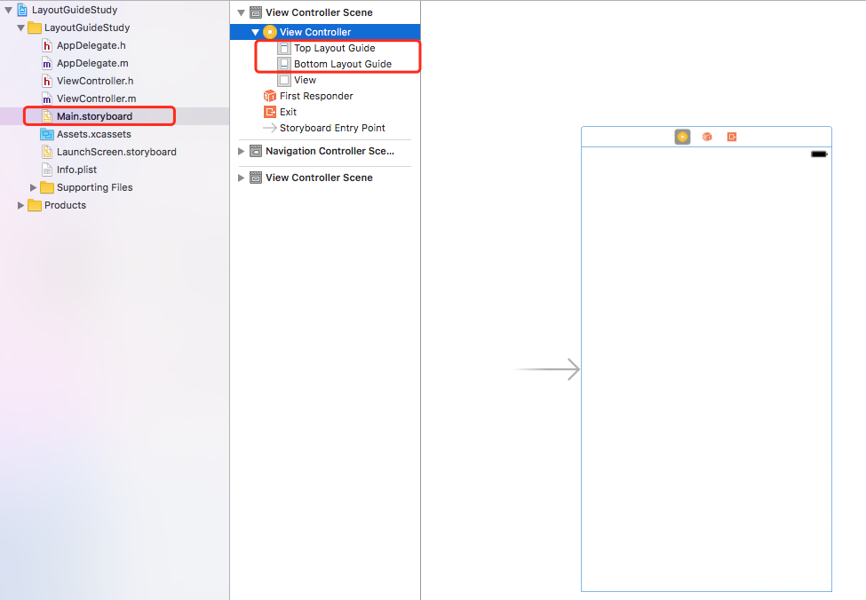
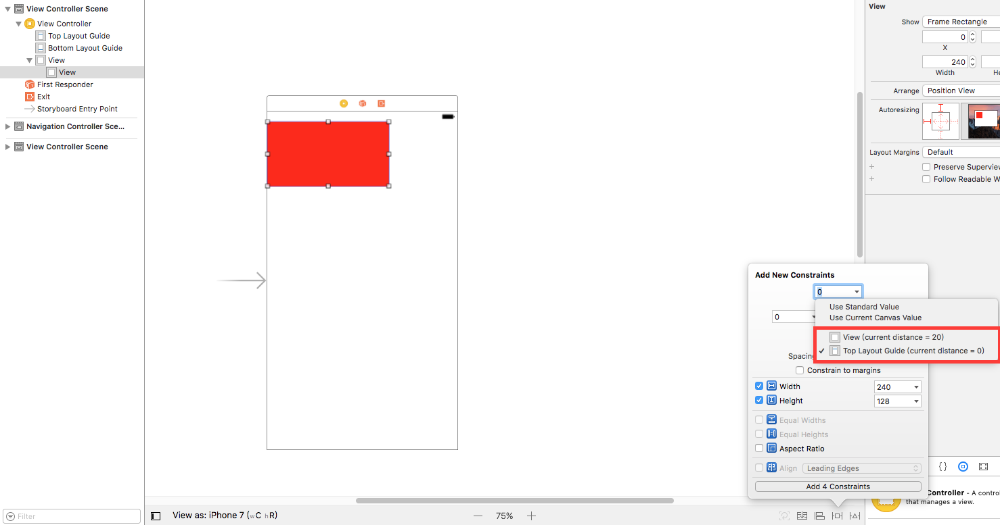
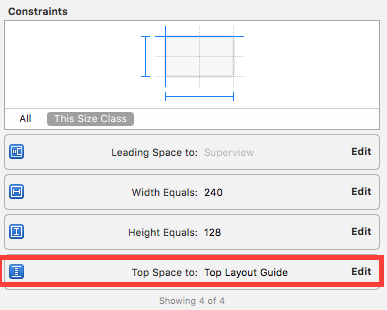
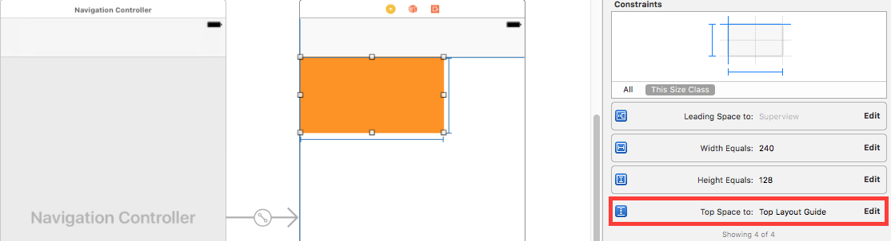
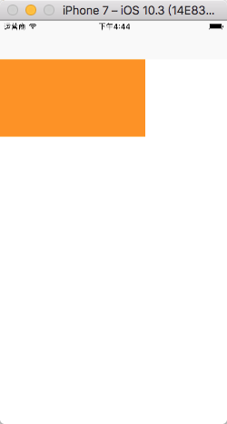
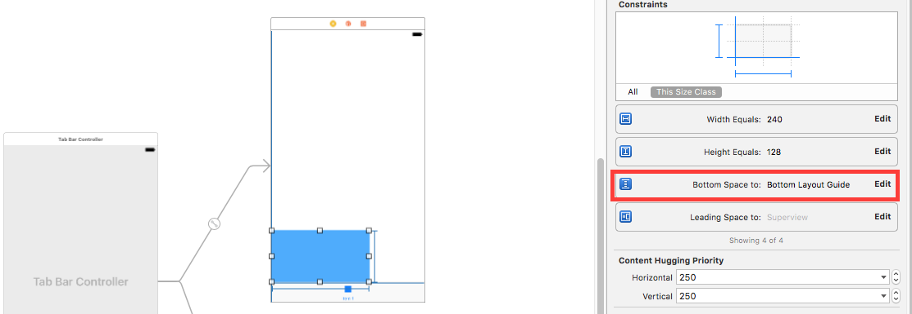
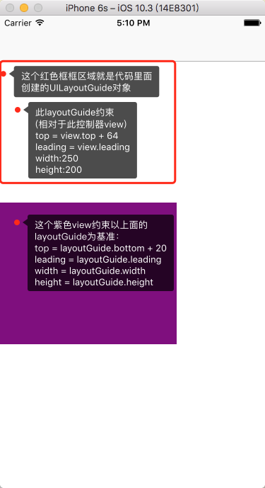
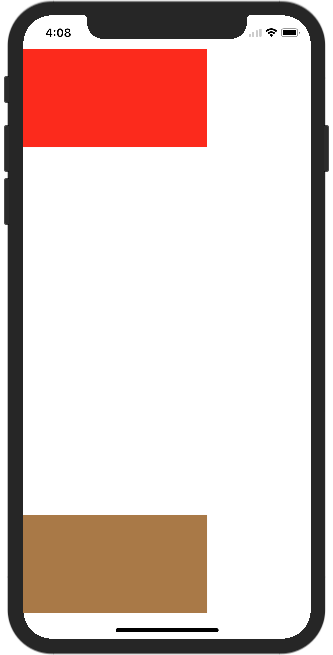

本文转载自iOS开发-LayoutGuide（从top/bottom LayoutGuide到Safe Area）。版权归作者所有
iOS7 topLayoutGuide/bottomLayoutGuide
创建一个叫做LayoutGuideStudy的工程，我们打开看一下Main.storyboard：

可以看到 View Controller 下面出现 topLayoutGuide/bottomLayoutGuide 这两个东西，并且和 Controller 的 View 处于同一层级。并且在 UIViewController 头文件里面,这两个属性是 id 类型遵守一个 UILayoutSupport 协议并且是只读的属性
1 | // These objects may be used as layout items in the NSLayoutConstraint API |
这就说明了这两个 LayoutGuide 是系统自动创建并管理的，这也解释了刚刚我们创建的工程里面 Main.storyboard 为什么会自动出现 topLayoutGuide/bottomLayoutGuide。
Demo&探索
我们拖拽一个红色的 UIView 到 Controller 的 view 里，添加约束的时候，注意到是右下角的约束设定框，关于顶部约束的基准 view 下拉选择，XCode 默认勾选了 Top Layout Guide

添加完宽高约束，最后约束如下所示

运行结果如下

可以看出 top 约束基于系统提供的 topLayoutGuide，系统会自动为这个 view 避开顶部状态栏。我们在 ViewController 里面打印红色 view
1 | <UIView: 0x7ff10860fa90; frame = (0 20; 240 128); autoresize = RM+BM; layer = <CALayer: 0x60000003b5c0>> |
看到红色 view 的 y 值就是 20。刚好是状态栏的高度。由此看出 Top Layout Guide 的作用就是在进行自动布局的时候，帮助开发者隔离出状态栏的空间。那么我们再看看导航控制器（顶部出现导航栏）的情况

运行结果如下

Top Layout Guide 同样自动帮助隔离出状态栏 + 导航栏。
在ViewController里面打印黄色view
1 | <UIView: 0x7fb04fe08040; frame = (0 64; 240 128); autoresize = RM+BM; layer = <CALayer: 0x61800003ef60>> |
看到黄色 view 的 y 值就是 64。刚好是状态栏 + 导航栏的高度。
同理，bottomLayoutGuide 就是用于在 TabbarController 里面隔离底部的 tabbar

扒一扒 topLayoutGuide/bottomLayoutGuide 对象
在UIViewController的viewDidLayoutSubviews方法打印
1 | - (void)viewDidLayoutSubviews |
打印结果如下
1 | topLayoutGuide- |
这个是 _UILayoutGuide 类型的私有对象，看起来里面有 frame，hidden，layer 属性，感觉十分像 UIView 啊，那我们就验证一下
1 | if ([self.topLayoutGuide isKindOfClass:[UIView class]]) { |
得到结论就是 topLayoutGuide/bottomLayoutGuide 其实是一个 UIView 类型的对象。
我们再打印一下 UIViewController 的 view 的 subviews
1 | - (void)viewDidLayoutSubviews |
总结
topLayoutGuide/bottomLayoutGuide 其实是作为虚拟的占坑 view，用于在自动布局的时候帮助开发者避开顶部的状态栏，导航栏以及底部的 tabbar 等。
iOS9 UILayoutGuide
iOS9开始，苹果新增加了一个UILayoutGuide的类，看看苹果官方对它的解释
The UILayoutGuide class defines a rectangular area that can interact with Auto Layout.
Use layout guides to replace the dummy views you may have created to represent
inter-view spaces or encapsulation in your user interface
大概意思是 UILayoutGuide 用于提供一个矩形区域可以用 Auto Layout 来定制一些约束特性，作为一个虚拟的 view 使用。
我想大概是苹果的工程师觉得以前的 topLayoutGuide/bottomLayoutGuide 提供虚拟占坑 view，隔离导航栏/tabber的思想不错，进而有了启发，能不能让整个 LayoutGuide 变得更灵活，让开发者能够自由定制，于是这个 `UILayoutGuide 类就设计出来了
那么如何自由定制一个 UILayoutGuide，我们看看这个类的几个属性
1 | @property(readonly, strong) NSLayoutXAxisAnchor *leadingAnchor; |
NSLayoutXAxisAnchor，NSLayoutYAxisAnchor，NSLayoutDimension 这几个类也是跟随 UILayoutGuide 在 iOS9 以后新增的，即便很陌生，但我们看上面 UILayoutGuide 的几个属性里面leading，trailing，top，bottom，center 等熟悉的字眼，就能明白这些属性就是用于给 UILayoutGuide 对象增加布局约束的。
我们在看UIView里面新增的一个分类
1 | @interface UIView (UIViewLayoutConstraintCreation) |
也是跟 UILayoutGuide 一样的提供了一致的属性。这就说明了 UILayoutGuide 是可以跟 UIView 进行 Auto Layout 的约束交互的。
Demo&探索
创建一个 UILayoutGuide，约束它距离控制器view的顶部 64，左边 0，宽 250，高 200，于是在 viewDidLoad 方法里面的代码
1 | // 创建 |
这样约束代码明显比使用 NSLayoutConstraint 简洁多了。
接着，我们再创建一个紫色 view，基于这个创建的 layoutGuide 进行约束，紫色 view 顶部距离上述 layoutGuide 底部 20，和 layoutGuide 左对齐，宽和高和 layoutGuide 保持一致
1 | UIView *viewBaseLayoutGuide = [[UIView alloc] init]; |
运行结果如下

iOS11 Safe Area / safeAreaLayoutGuide
iOS11 又引入了一个 Safe Area（安全区域）的概念，苹果建议在这个安全区域内放置 UI 控件。这个安全区域的范围其实就是整个屏幕隔离出状态栏，导航栏，tabar，以及 iPhone X 顶部刘海，底部虚拟 home 手势区域的范围。
从这个介绍可以看得出，所谓的 Safe Area 其实也就是升级版本的 topLayoutGuide/bottomLayoutGuide，以前只能限制 top/bottom 的 Layout，现在更加强大了。
再看一下 UIViewController 头文件：（用 XCode 9 以上版本打开）
1 | @property(nonatomic,readonly,strong) id<UILayoutSupport> topLayoutGuide API_DEPRECATED_WITH_REPLACEMENT("-[UIView safeAreaLayoutGuide]", ios(7.0,11.0), tvos(7.0,11.0)); |
苹果提示 topLayoutGuide/bottomLayoutGuide 这两个属性在 iOS11 已经过期，推荐使用 UIView 的 safeAreaLayoutGuide 属性（safeAreaLayoutGuide 稍后会介绍）。
另外用 XCode9 以上版本创建工程的时候，Main.storyboard 会默认选择 Use Safe Area Layout Guides，控制器 view 下面会出现 safe area

Demo&探索
如上图所示，我们基于 storyboard 提供的控制器 view 的 safeArea 区域对红色的 view 进行约束：顶部距离安全区域 0，左边距离安全区域 0，宽 240，高 180

运行结果如下

为了验证 Safe Area 在竖屏 iPhone X 底部起到的隔离作用，又增加了一个棕色的 view：左边距离安全区域 0，底部距离安全区域 0，宽 240，高 180

运行结果如下

利用安全区域进行 Auto Layout 布局，分别在 iPhone 8，iPhone X 上以及避开了状态栏/刘海/底部的 home 虚拟手势区域，使得开发者不用关心状态栏以及适配 iPhone X 避开刘海的高度，只需要安安心心的苹果指定的这个安全区域放置子控件，布局就可以了。
UIView 的safeAreaLayoutGuide属性
查看 UIView 在 iOS11 上关于 Safe Area 新增的两个属性
1 | @property (nonatomic,readonly) UIEdgeInsets safeAreaInsets API_AVAILABLE(ios(11.0),tvos(11.0)); |
很明显这个只读的 safeAreaLayoutGuide 属性是系统自动创建的，可以让开发者用代码进行基于安全区域进行自动布局。
点击控制器的 view 触发 touchesBegan 进行打印验证：
1 | - (void)touchesBegan:(NSSet<UITouch *> *)touches withEvent:(UIEvent *)event |
打印结果
1 | safeAreaInsets {44, 0, 34, 0} |
根据打印结果 safeAreaInsets.top=44，刚好是苹果规定的适配 iPhone X 要避开的刘海的距离，safeAreaInsets.bottom=34，刚好是底部的 home 虚拟手势区域的高度。
进行横屏切换后

再次点击控制器的 view 触发 touchesBegan 进行打印验证，打印结果：
1 | safeAreaInsets {0, 44, 21, 44} |
旋转之后，safeAreaInsets.left 距离刘海隔离区域依然是 44，底部的 home 虚拟手势区域变成了 21。由此证明，系统也把屏幕旋转的情况也自动计算好了。

iOS 11.0 之后系统新增安全区域变化方法
UIViewController中新增：
1 | - (void)viewSafeAreaInsetsDidChange; |
UIView中新增：
1 | - (void)viewSafeAreaInsetsDidChange； |
如果屏幕旋转，相应的安全区域也会变化，所以不比担心。
1 | - (void)viewSafeAreaInsetsDidChange { |

UIScrollView/UICollectionView
在 iOS11 上所有 UIScrollView 及其子类默认会把内容放到 Safe Area 范围内，导致顶部会有空白区域或者 Cell 不能顶到屏幕最上面。为此，iOS 新增了方法来约束在 UIScrollView 上如何适配 Safe Area
1 | @property(nonatomic) UIScrollViewContentInsetAdjustmentBehavior contentInsetAdjustmentBehavior API_AVAILABLE(ios(11.0),tvos(11.0)); |
1 | typedef NS_ENUM(NSInteger, UIScrollViewContentInsetAdjustmentBehavior) { |
总结
这次为了适配 iPhone X，个人从一开始看到 iOS11 的 Safe Area 这个概念，追溯到 iOS7 topLayoutGuide/bottomLayoutGuide，从头开始学习，受益匪浅。也体会到了苹果工程师针对 UI 适配，面向开发者进行的一系列探索，以及优化的心路历程。也看到了他们如何将一个好的思路，面对当前的需求变化，进行合理的扩展，设计出的灵活可扩展的 API：
1.iOS7: topLayoutGuide/bottomLayoutGuide，利用一个虚拟的 view 初步解决导航栏，tabbar 的隔离问题。
2.iOS9:有了虚拟 view 的思路,又考虑能不能去除 top/bottom 概念的局限性，让开发者都可以灵活自定义这个隔离区域，又提供一些更方便简洁易懂的API方便进行代码自动布局，于是有了 UILayoutGuide 这个类。
3.两年后的 iOS11，有了 iPhone X，苹果工程师顺理成章的将他们在 iOS9 的探索成果利用起来，他们自定义了一个 UILayoutGuide，给开发者提供了一个只读属性的 safeAreaLayoutGuide，并且提出安全区域的概念。